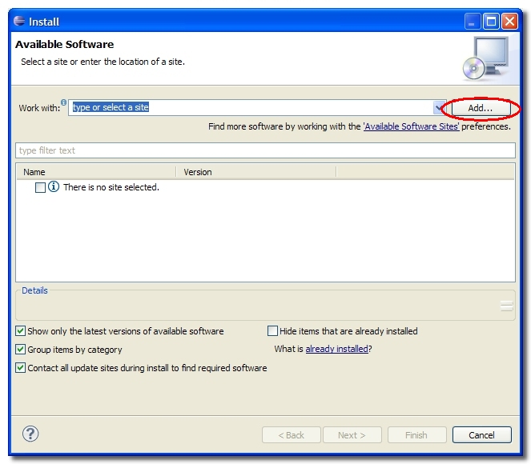
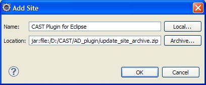
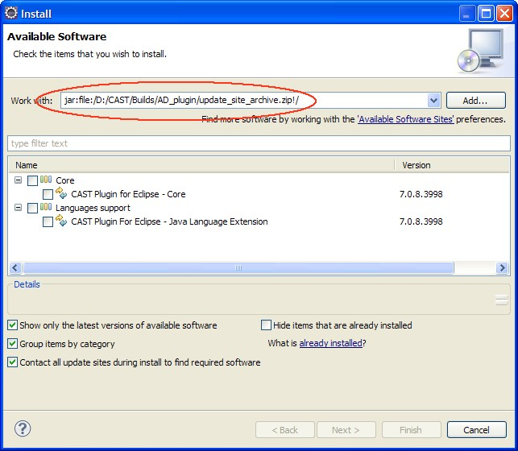
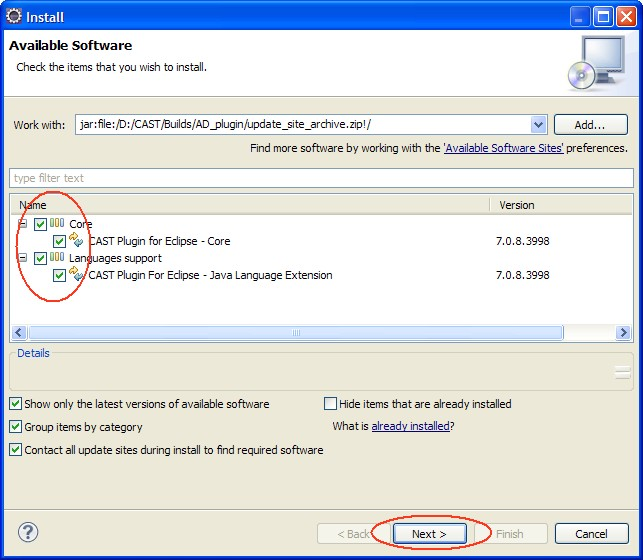
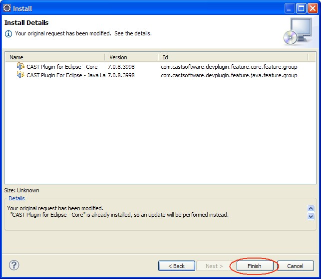
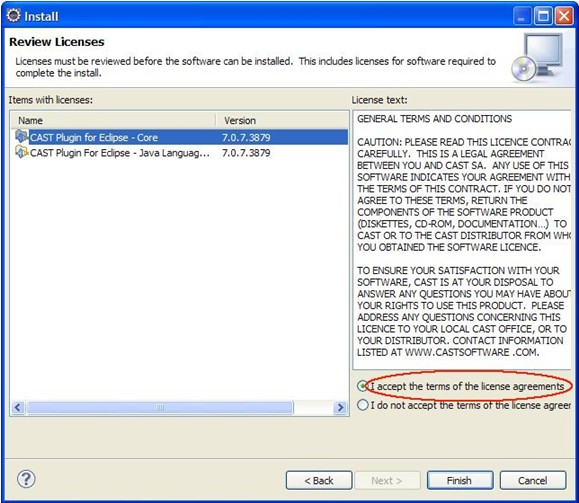
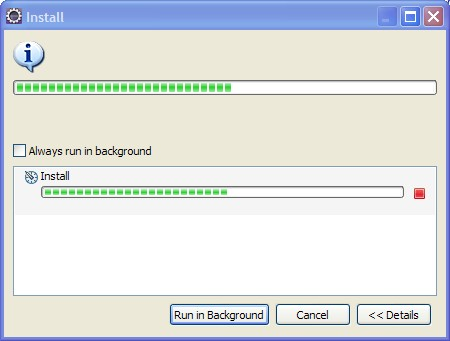
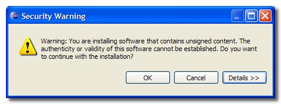
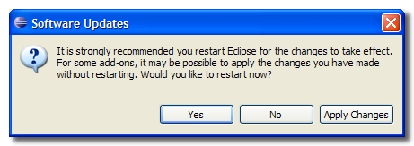

Plug-in installation for Eclipse 3.5.x and 3.6.x
To install the CAST Plug-in for Eclipse in Eclipse 3.5.x
and 3.6.x:
- In Eclipse, please open the Available Software manager. This can be
accessed via the Help > Install New Software menu option. This will
launch a new dialog box. Click the Add button to configure a new
software download site.:

- In the Add Site dialog box, enter a name for the Site (CAST Plug-in
for Eclipse) and then click the Archive button to add the file location
of the ZIP file containing the plug-ins as shown in the example below:

- Click OK.
- The site will then be added to the list of existing sites (if any) and any
available components will be listed:

- Select both components (as shown below). Make sure other unrelated components are not selected.
Then click Next to start the installation process:

- At this point Eclipse will verify the contents of the ZIP and display a
new dialog box with a list of all available software from CAST. Review the
items that will be installed and then click Next:

- Eclipse will then display the Review Licenses dialog box – select
each CAST component and ensure that you have selected the "I accept the terms
of the license agreements" option as shown below, then click Finish:

- The installation process will then begin:

- Click OK to accept the Security Warning with regard to
unsigned content:

- When the installation process is complete, Eclipse will ask you whether
you want to restart the program. CAST recommends that you do so – click Yes
in the displayed dialog box:

Please refer to Plug-in configuration for
more information about post install configuration process.